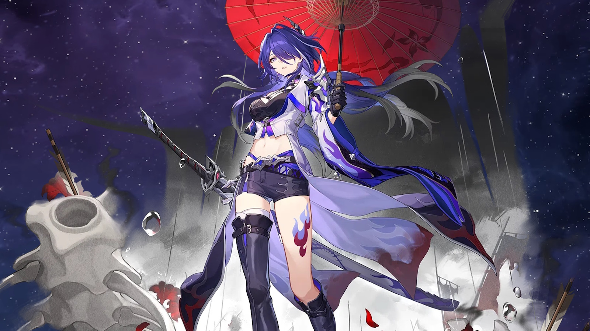

<!--Se recomienda guardar las imágenes que usamos en nuestra página web dentro de una capeta "images", lo que posiciona mejor nuestra página 
  dentro del buscador-->
<meta charset="utf-8">

<figure>
  
  <figcaption>Esqueleto de un Tiranosaurio-Rex</figcaption>
</figure>

<figure>
  
  <figcaption>Acheron, nuevo personaje del elemento Rayo y la Vía de la Nihilidad</figcaption>
</figure>